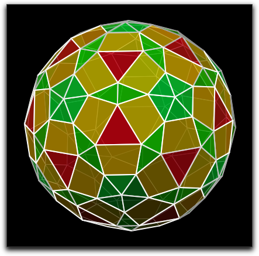

Vectors and Matrices
Lists can serve as representation of vectors and matrices. In particular, lists that contain numerical values permit many different arithmetic operations. Furthermore, the coordinate values of geometric elements are usually retrieved as lists of numerical values. For instance, if
A is the label of a geometric point, then
A.xy returns a list of two numbers, the
x and the
y coordinates of the point. Similarly,
A.homog returns a list of three numbers: the homogeneous coordinates of the point. Several arithmetic operations serve the particular purpose of calculating directly with these coordinate vectors.
Definition of Vectors and Matrices
Any list can be considered as a "vector of objects." However, of particular interest are vectors of numbers. Such a vector will be called a "number vector." Whether a certain list is a number vector can be tested with the operator
isnumbervector(<expr>).
If the elements of a list are again lists, and if all these lists have the same length, then such a list is called a
matrix. Whether a list is a matrix can be tested with the operator
ismatrix(<expr>). If furthermore all (second-level) elements in the matrix are numbers, this matrix is called a number matrix. Whether a list is a number matrix can be tested with the operator
isnumbermatrix(<expr>). The entries of a matrix are vectors of the same length. These vectors are considered as the rows of the matrix. Thus, if a matrix contains
n vectors of length
m, then it is an
n ×
m matrix.
Addition and Multiplication
In the section
Arithmetic Operators we explain how the fundamental operations of addition, subtraction, multiplication, and division can be applied to lists of numbers. As a rule of thumb, one can say that on this level, everything that is mathematically reasonable can be performed in CindyScript. So, for instance, if
A and
B are lists of numbers, then the expression
(A+B)/2 calculates the midpoint of these two vectors.
Addition and subtraction of lists is allowed whenever the lists have the same shape. This means that the lists have the same length, and if some of the entries are lists as well, then the corresponding entries of the two summands recursively again have the same shape.
Multiplication with lists is allowed whenever this performs a mathematically meaningful operation. The following table summarizes the different admissible uses of the multiplication operator.
| factor 1 | factor 2 | result | meaning
|
| number | number | number | usual multiplication
|
| number | vector of length r | vector of length r | scalar vector multiplication
|
| vector of length r | number | vector of length r | scalar vector multiplication
|
| vector of length r | vector of length r | number | scalar product of two vectors
|
| n × r matrix | vector of length r | vector of length n | matrix × vector
|
| vector of length n | n × r matrix | vector of length r | vector × matrix
|
| n × r matrix | r× m matrix | n × m matrix | matrix multiplication
|
Products, Sums, Max, and Min
The summation operator: sum(<list>)
Description: This operator adds all elements of a list. The elements may be numbers, or themselves lists (or vectors or matrices), or even strings.
| Code | Result
|
sum(1..10) | 55
|
sum([4,6,2,6]) | 18
|
sum([ [3, 5], [2, 5], [5, 6] ]) | [10, 16]
|
sum(["h","e","ll","o"]) | "hello"
|
One can, for instance, use the sum operator to define an arithmetic mean function by the following code fragment:
average(x) := sum(x)/length(x)
This function works for a list of numbers as well as for the average of a list of vectors or matrices.
The summation operator: sum(<list>,<expr>)
Description: This operator is similar to the summation operator, but it takes the sum of results of <expr> while a loop traverses all elements of <list>. The running variable is as usual #.
We can calculate the sum of all squares of the first hundred integers by the following expression:
| Code | Result
|
sum(1..100,#^2) | 338350
|
It is time for a little mathematical mystery:
| Code | Result
|
sum(1..10,#^2) | 385
|
sum(1..100,#^2) | 338350
|
sum(1..1000,#^2) | 333833500
|
sum(1..10000,#^2) | 333383335000
|
The summation operator: sum(<list>,<var>,<expr>)
Description: This operator is similar to the last one, except that the running variable is locally named <var>.
The product operator: product(<list>)
Description: This operator multiplies together all elements of a list. The elements are expected to be numbers.
| Code | Result
|
product(1..5) | 120
|
One can, for instance, use the product operator to define the factorial function by the following code fragment:
The product operator: product(<list>,<expr>)
Description: This operator is similar to the product operator, but it takes the product of results of <expr> while a loop traverses all elements of <list>. The running variable is, as usual, #.
The product operator: product(<list>,<var>,<expr>)
Description: This operator is similar to the last one, except that the running variable is locally named <var>.
The maximum operator: max(<list>)
Description: This operator finds the maximum value in a list of entries.
| Code | Result
|
max([4,2,6,3,5]) | 6
|
The maximum operator: max(<list>,<expr>)
Description: This operator is similar to the max operator max(<list>), but it takes the maximum of results of <expr> while a loop traverses all elements of <list>. The running variable is, as usual, #.
The maximum operator: max(<list>,<var>,<expr>)
Description: This operator is similar to the last one, except that the running variable is locally named <var>.
The minimum operator: min(<list>)
Description: This operator finds the minimum of a list of entries.
| Code | Result
|
min([4,2,6,3,5]) | 2
|
The minimum operator: min(<list>,<expr>)
This operator is similar to the min operator
min(<list>), but it takes the minimum of results of
<expr> while a loop traverses all elements of
<list>. The running variable is, as usual,
#.
The minimum operator: min(<list>,<var>,<expr>)
Description: This operator is similar to the last one, except that the running variable is locally named <var>.
Vector and Matrix Arithmetic
Besides addition and multiplication, as described earlier in this section, there are several operators responsible for vector and matrix administration.
Dimensions of a matrix: matrixrowcolum(<matrix>)
Description: If the argument is a matrix, this operator returns the number of rows and the number of columns of the matrix, encoded as a two-element list.
| Code | Result
|
matrixrowcolumn([[1,2],[3,2],[1,3],[5,4]]) | [4,2]
|
Transposing a matrix: transpose(<matrix>)
Description: If the argument is a matrix, this operator returns the transpose of the matrix. In the transpose, the rows and columns are interchanged.
| Code | Result
|
transpose([[1,2],[3,2],[1,3], [5,4]]) | [[1,3,1,5],[2,2,3,4]]
|
transpose([[1],[3],[1],[5]]) | [[1,3,1,5]]
|
transpose([[1,3,1,5]]) | [[1],[3],[1],[5]]
|
Rows of a matrix: row(<matrix>,<int>)
Description: If the first argument is a matrix, this operator returns the row with index <int> as a vector.
| Code | Result
|
row([[1,2],[3,2],[1,3], [5,4]],2) | [3,2]
|
Columns of a matrix: column(<matrix>,<int>)
Description: If the first argument is a matrix, this operator returns the column with index <int> as a vector.
| Code | Result
|
column([[1,2],[3,2],[1,3], [5,4]],2) | [2,2,3,4]
|
Extracting a submatrix of a matrix: submatrix(<matrix>,<int1>,<int2>)
Description: If the first argument is a matrix, this operator returns the submatrix obtained by deleting the column with index <int1> and the row with index <int2>.
| Code | Result
|
submatrix([[1,2,4],[3,2,3], [1,3,6],[5,4,7]],2,3) | [[1,4],[3,3],[5,7]]
|
Converting a vector to a row matrix: rowmatrix(<vector>)
Description: If the first argument is a vector, this operator returns the matrix with a single row consisting of this vector.
| Code | Result
|
rowmatrix([1,2,3,4]) | [[1,2,3,4]]
|
Converting a vector to a column matrix: columnmatrix(<vector>)
Description: If the first argument is a vector, this operator returns the matrix with a single column consisting of this vector.
| Code | Result
|
columnmatrix([1,2,3,4]) | [[1],[2],[3],[4]]
|
Creating a zero vector: zerovector(<int>)
Description: Creates a zero vector of length <int>.
Creating a zero matrix: zeromatrix(<int1>,<int2>)
Description: Creates a matrix with <int1> rows and <int2> columns that contains only zeros.
Linear Algebra
Since lists may be used as vectors or matrices there are also several arithmetic operations from linear algebra that are applicable to lists.
Determinant of a square matrix: det(<matrix>)
Description: This operator calculates the determinant of a square matrix, that is, one with the same number of rows and columns. Note that the determinant is an extremely useful function, for many geometric purposes. For instance, the determinant of the 3 × 3 matrix formed by the homogeneous coordinates of three points is zero if and only if the three points are collinear. The sign of the determinant carries information on the relative orientation of the three points. In the section
Geometric Operators you can find descriptions of the functions
area(<vec1>,<vec2>,<vec3>) and
det(<vec1>,<vec2>,<vec3>). Both are variants of the determinant function that are particularly useful in geometric contexts and exhibit slightly better performance than the general determinant formula.
Calculating the length of a vector: |<vec>|
Description: Enclosing a vector between two vertical bars |<vec>| can be used to calculate the length of a vector. This operator can also be applied to a real or complex number and returns its absolute value.
Calculating the distance between two vectors: |<vec1>,<vec2>|
Description: Enclosing two vectors of equal length within two vertical bars |<vec1>,<vec2>| can be used to calculate the distance between the vectors.
Calculating distances: dist(<vec1>,<vec2>)
Description: This operator calculates the distance between two vectors and returns it as a number. This operator is also very useful for geometric calculations.
The Hermitian scalar product: hermiteanproduct(<vec1>,<vec2>)
Description: This operator returns the Hermitian scalar product of two vectors. It is similar to the dot product <vec1>*<vec2>. However, the second vector is complex conjugated before multiplication. In particular, hermiteanproduct(a,a) is always nonnegative.
Example:
The following code fragment shows the difference between the dot product and the scalar product.
a=[2+3*i,1-i];
println(hermiteanproduct(a,a));
println(a*a);
produces the output:
Inverse of a square matrix: inverse(<matrix>)
Description: This operator calculates the inverse of a square matrix, that is, one with the same number of rows and columns. If the matrix is not square or not invertible the operator returns an undefined object. Inverses are sometimes very useful when the same type of linear equations Ax=b has to be solved for different right sides b. If the matrix A does change often it is more preferable to use the linearsolve operator.
Adjunct of a square matrix: adj(<matrix>)
Description: This operator calculates the adjunct of a square matrix. For invertible matrices the adjunct is the inverse times the determinant. Unlike the inverse the adjunct of a matrix always exists.
Eigenvalues of a square matrix: eigenvalues(<matrix>)
Description: This operator calculates the eigenvalues of a square matrix. The result is returned as a list of values. If an Eigenvalue occurres with algebraic multiplicity 'r' the operator lists this eigenvalue 'r' times. Thus the operator always returns n values for an n by n matrix. In particular the operator assumes the matrix to be embedded over the complex numbers. So also complex eigenvalues are listed.
Example:
m1=[[1,1,0],[0,1,0],[0,0,.5]];
println(eigenvalues(m1));
m2=[[1,1,0],[-1,1,0],[0,0,.5]];
println(eigenvalues(m2));
produces the output:
[1,1,0.5]
[1 + i*1,1 - i*1,0.5]
Eigenvectors of a square matrix: eigenvectors(<matrix>)
Description: This operator calculates a basis of eigenvectors of a square matrix. The result is returned as a list of vectors. The order of this list corresponds to the order of the eigenvalues in the eigenvalues operator.
Warning: If the matrix is not diagonalizable the output of this function is meaningless.
Solving a linear equation: linearsolve(<matrix>,<vector>)
Solving a linear equation: linearsolve(<matrix>,<matrix>)
Description: The operator linearsolve(A,b) calculates a solution x of the system of equations Ax=b. The matrix A must be square (n times n) and invertible. b can either be an n dimensional vector, it can be a matrix with n rows. If either A is not invertible or the dimension constraints are not met an undefined value is returned.
Example:
m=[[1,1,0],[0,1,0],[0,1,1]];
x=linearsolve(m,[2,3,4]);
println(x);
println(m*x);
produces the output:
Advanced geometric operations
Computing a convex hull in 3D: convexhull3d(<list of vectors>)
Description: This operator takes a list of 3-dimensional vectors as input and calculates their convex hull. it returns a pair of two lists. The first of these lists contains the vertices of the convex hull. The second list contains a the list of faces of the convex hull. Each facet is given as the indices of the vertices of the first list.
Example: The following list of points describes a three dimensional cube with an additional point in its center.
[[1,1,1],[1,1,-1],[1,-1,1],[1,-1,-1],
[-1,1,1],[-1,1,-1],[-1,-1,1],[-1,-1,-1],[0,0,0]]
Applying the convex hull operator to this list produces the following output:
[
[[1,1,1],[1,1,-1],[1,-1,1],[1,-1,-1],
[-1,1,1],[-1,1,-1],[-1,-1,1],[-1,-1,-1]],
[[6,5,1,2],[3,1,5,7],[3,4,2,1],[8,7,5,6],[8,6,2,4],[8,4,3,7]]
]
Observe that the interior point has been properly removed, and that the convex hull operator can nicely handle coplanarities.
The convex hull operator is remarkably robust to degenerate situations. The following image has been computed under usage of the
convexhull3d(...) operator. It shows the section of a 4-dimensional polytope (a 600-cell) with a 3-dimensional space.
 |
| A section of a 600-cell rendered with CindyScript.
|